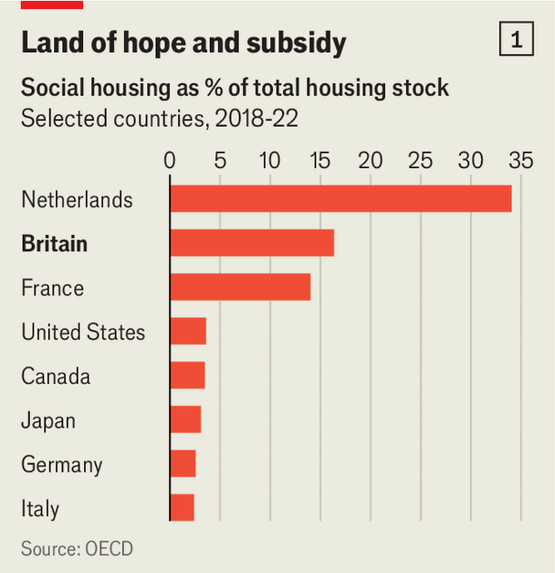
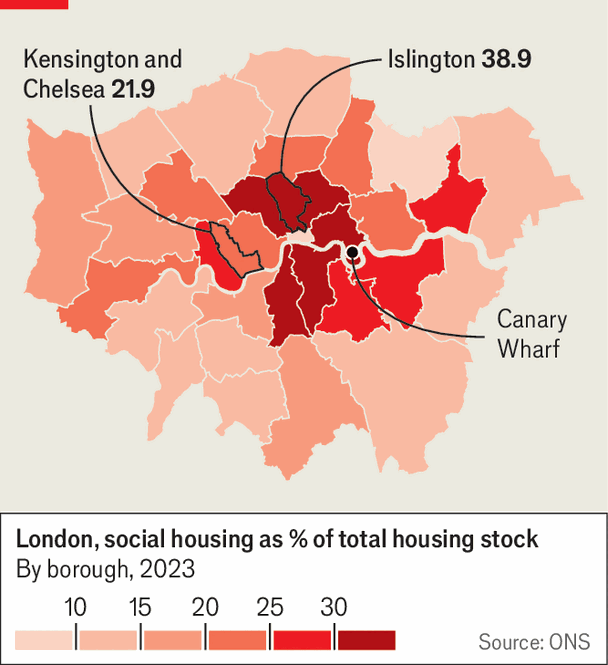

Britain’s social housing subsidises the wrong people
And is bad for growth
July 9th 2026

Look for a house on HomeSwapper, a property-comparison website, and the deals seem too good to be true. Three-bed houses in leafy London postcodes are being rented for less than £800 ($1070) a month; on other sites similar properties go for well over three times that. Try to put in an offer, though, and you will probably be blocked. HomeSwapper is a service that lets existing social-housing tenants swap their homes. Anybody living in the private sector doesn’t get a look-in.

Many private-sector renters, used to handing over a third of their pre-tax income to landlords, look enviously at social-housing residents. These homes are owned by local councils or charities and let at sub-market rates. Although England already has one of the highest levels of social housing in Europe (see chart 1), over 1.3m households are on waiting lists for a social home. Andy Burnham is clamouring to build more. The probable next prime minister has made a major council-house building programme a cornerstone of his platform.
One problem with his plan is that it would be expensive: we estimate it could cost as much as £10bn a year. The other is that it keeps intact England’s broken system of housing support, which rests on two overlapping subsidies. Social housing gives over 4m households (16% of the total) discounted rents. Means-tested benefits meanwhile provide cash to those on low incomes or out of work, to cover some or all rent. Two-thirds of social-housing tenants draw on both, using the cash to shrink their rent further. In addition, more than 1m households in private accommodation (24% of all private renters) get cash alone.
Rich social-housing tenants win from this messy system. Applicants for social housing tend to be hard-up. But they mostly get lifetime tenancies, and fortunes can improve. The unemployed teenage mum can become a well-paid empty-nester, yet her rent stays cut-price. In some cases her children would be able to inherit the tenancy. Eleven per cent of all social homes are lived in by the country’s richest 40%. Around 1.4m tenants don’t claim housing-related benefits, often because they are too rich to pass the means test. The media periodically work themselves into a fury about extreme cases, from union barons on six-figure salaries to Sierra Leone’s first lady.
Social rents across England are typically 50% of market rent, but in London the discounts are steeper. Newly let social houses in Kensington and Chelsea went for 21% of market rent in 2024-25 (a £32,000-a-year saving). A crude calculation comparing average social and private rents suggests that the government in effect subsidises English social-housing tenants by as much as £20bn a year. This probably overstates the true cost, since social-housing stock tends to be less desirable than equivalent private properties. Yet it shows the spending to be far from small change.
When the Conservative government tried to charge market rents to high-earning tenants in 2015, it backed down in the face of furious objections. But the counter-arguments were weak. Some tenants claimed they weren’t subsidised because their rent more than covered their property’s maintenance costs. However, this ignores the opportunity cost. The government owns an asset for which it could charge significantly higher rates and use the extra money on more deserving causes, like tackling homelessness.
Others worried that driving better-off tenants away would turn social housing into ghettos. Yet the proposal was never to evict anyone, just to charge market rates. True, a sharp rent increase would be difficult for tenants to navigate and should be phased in slowly. Again the opportunity cost is significant. Housing benefits for private renters are particularly stingy. In some areas, allowances cover the full rent in fewer than 5% of local properties, forcing tenants to skimp on food or heating. Prioritising subsidies for wealthy social tenants over that group makes no sense.

The system is also bad for growth. The subsidies are so big that they stop people moving for better-paid jobs elsewhere. Others are incentivised to cling to homes in city centres despite not working (over half of social-housing residents don’t work). The problem is acute in London, where the turnover of social housing is particularly low (around 3% a year), partly because the subsidies there are so high. With social housing making up nearly 40% of the stock in inner boroughs like Islington (see map), the result is a serious misallocation of the capital’s housing.
Mr Burnham claims that new council homes will cut the benefits bill. But this holds only if they go to people on benefits who would otherwise be privately renting or homeless and in emergency shelter. Fewer than half of new social-housing tenants fitted that description in 2024-25. A quarter were previously living with friends and family. Housing them might be kind (living with one’s parents can be painful), but if it creates a fresh benefits claim, it will cost the exchequer more, not less.
Britain’s system of housing subsidies is like a leaky pipe, spraying cash out to those who don’t need it. Rather than turning up the pressure with new council homes, Mr Burnham should fix the holes. ■
For more expert analysis of the biggest stories in Britain, sign up to Blighty, our weekly subscriber-only newsletter.